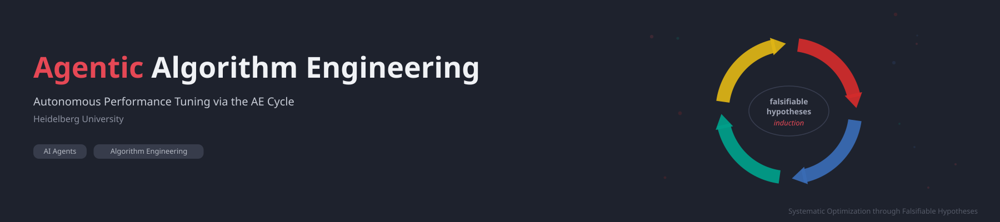

Agents that optimize your code like an algorithm engineer: a falsifiable hypothesis before every experiment, correctness checked after every change, one reviewable patch per accepted change, and a PDF report of the whole session.
A skill for Claude Code and Codex, from the Algorithm Engineering Group at Heidelberg University.
Every kept change was checked against the original output.
| Code | Problem | Result | Correctness | Details |
|---|---|---|---|---|
| VieCut | exact minimum cut | 8.9x faster | every cut unchanged | v2.0, paper |
KaHIP kaffpa | graph partitioning | 3.9x faster | partition quality unchanged | v3.26, report |
KaHIP ultra | graph partitioning quality | 2.2% smaller cuts | same balance rule as strong | v3.28 |
| Hochbaum's pseudoflow | maximum flow | 3.0x faster | flow value verified on 164 instances | KB 039 |
| FREIGHT | streaming hypergraph partitioning | 1.82x faster | bit-identical output | KB 035 |
| ParHIP | distributed graph partitioning (MPI) | 1.61x faster | byte-identical partitions | KB 040 |
| ScalableCorrelationClustering | correlation clustering | 1.24x faster | identical solution quality | v1.2 |
Algorithm Engineering is a cycle of design, analysis, implementation and experiment, driven by falsifiable hypotheses. AAE hands this cycle to an autonomous agent. During setup you agree with the agent on the benchmark, the metric, the correctness assertions and the budget; then it runs on its own.
A falsifiable hypothesis: "changing X will improve the metric by roughly Z, because ..."
Predict direction and size of the effect before measuring, from profiling and analysis.
A minimal change, committed to Git, with the correctness assertions checked.
Run the benchmark; keep the change only if it is better and still correct, otherwise revert.
patches/, each with its hypothesis, easy to review and apply.From the report of the KaHIP kaffpa session: 122 experiments, 69 hypotheses, 41 patches, 3.9x faster in total.
In Claude Code:
/plugin install aae --marketplace CHSZLab/AgenticAlgorithmEngineering
/aae:aae make the solver in src/ faster on the graphs in data/In Codex, install the skill with scripts/install_codex_skill.py and call it with $aae; any other agent can follow AAE.md. To try it first, run the 10-minute quick-start example: a slow but correct shortest-path program with a benchmark and a correctness check.
| autoresearch | AlphaEvolve, OpenEvolve, ShinkaEvolve | AAE | |
|---|---|---|---|
| Works on | one training script | code blocks scored by an evaluator | any existing code base and language |
| Search | one agent, keep or discard | language-model mutations and an evolutionary population | one agent following the Algorithm Engineering cycle |
| Before each experiment | the agent's next idea | a proposed mutation | a falsifiable hypothesis with its predicted effect |
| Correctness | the metric | the evaluator score | assertions agreed with you, checked after every change |
| What you get | improved script and log | best program and population | one patch per change, a PDF report, lessons in a shared knowledge base |
Sessions share what they learned: the knowledge base collects optimization techniques and experiment results, and agents read it before they start. Contributions from your own sessions are welcome.
David A. Bader, Adil Chhabra, Ernestine Großmann, Monika Henzinger, Alexander Noe, and Christian Schulz. Agentic Algorithm Engineering: Improving Shared-Memory Exact Minimum Cuts. arXiv:2609.07204, 2026.
@misc{bader2026agenticalgorithmengineering,
title = {Agentic Algorithm Engineering: Improving Shared-Memory Exact Minimum Cuts},
author = {David A. Bader and Adil Chhabra and Ernestine Gro{\ss}mann and Monika Henzinger and Alexander Noe and Christian Schulz},
year = {2026},
eprint = {2609.07204},
archivePrefix = {arXiv},
primaryClass = {cs.AI},
url = {https://arxiv.org/abs/2609.07204}
}